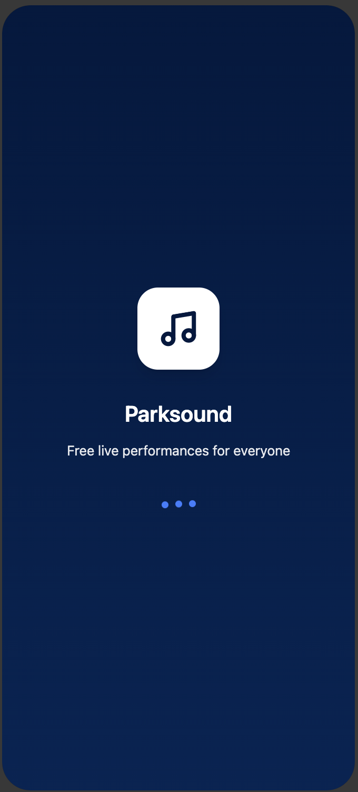
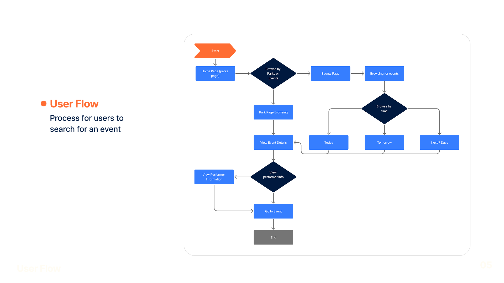
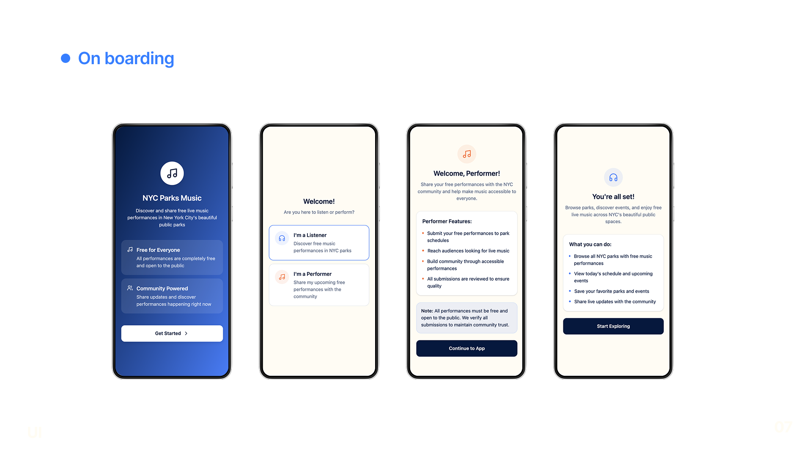
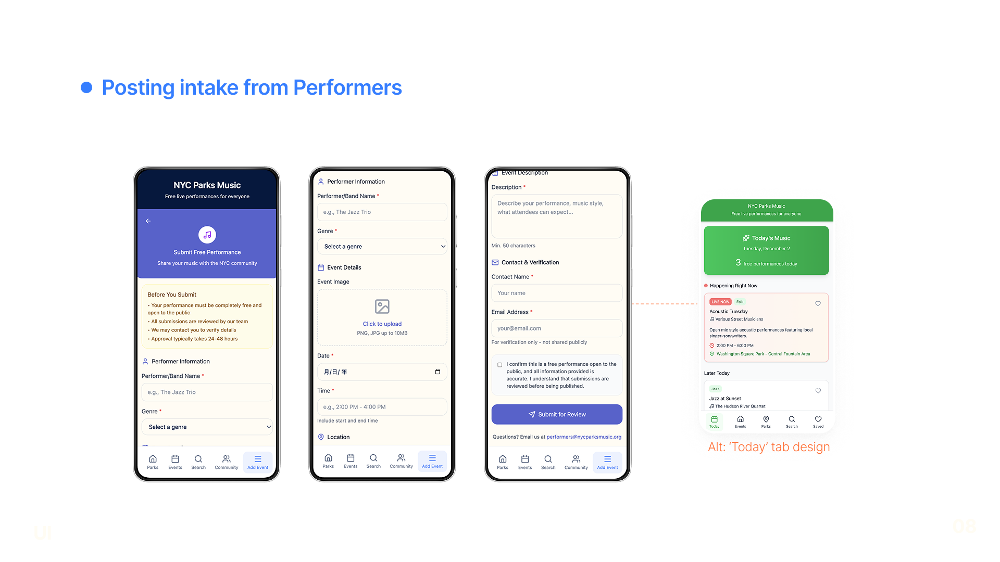
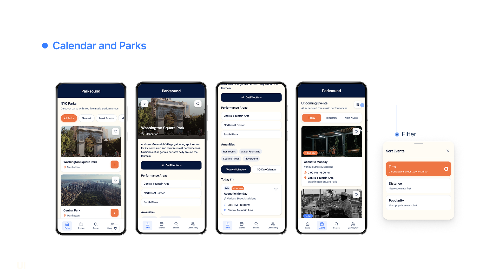
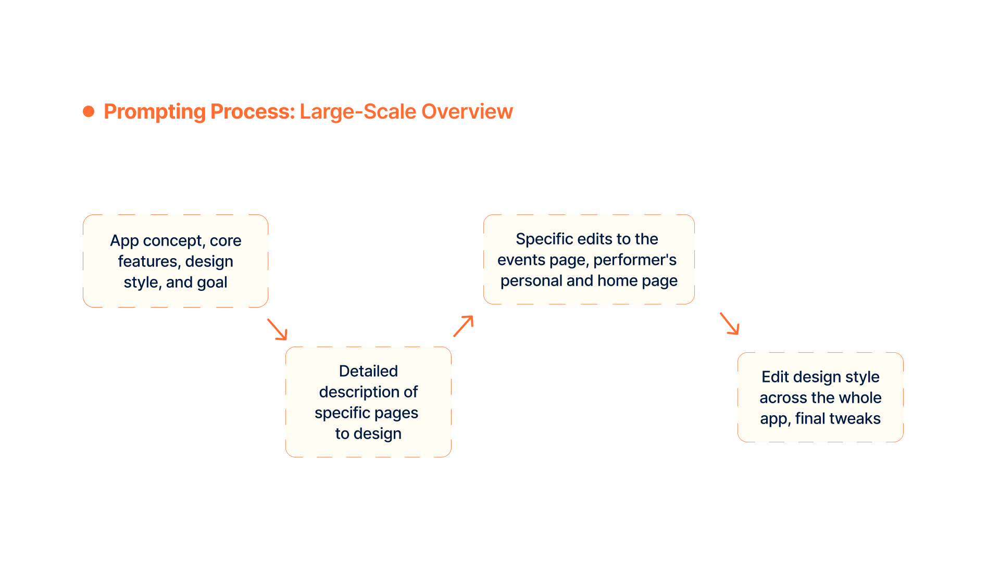
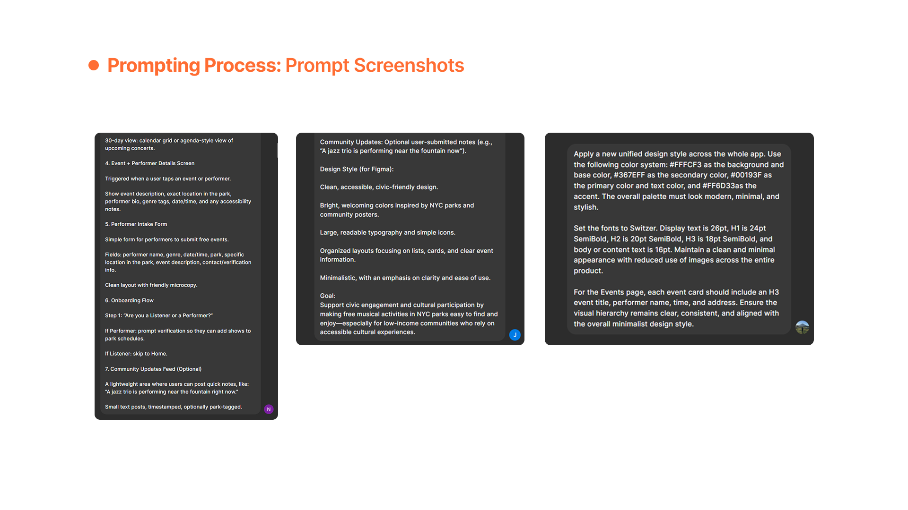

Overview
A mobile-first platform that connects low-income NYC residents to free live music happening in their local parks.
AI UX AI Prototyping Challenge

A mobile-first platform that connects low-income NYC residents to free live music happening in their local parks.
Removes the barriers of cost, awareness, and access that keep many New Yorkers from the city's rich live-music scene.
Open the app, filter nearby shows by distance, pick one happening today or this week, and head to the park.
Audience · Concert Lover
Artist · Street Performer
For many low-income New Yorkers, attending live music and cultural events is financially out of reach.
The city and local performers host free concerts in parks regularly, but they're poorly aggregated, inconsistently advertised, and scattered across websites and social feeds.
As a result, many of these shows go unnoticed.






use a clear structure, be specific when iterating, and don't be afraid to undo!